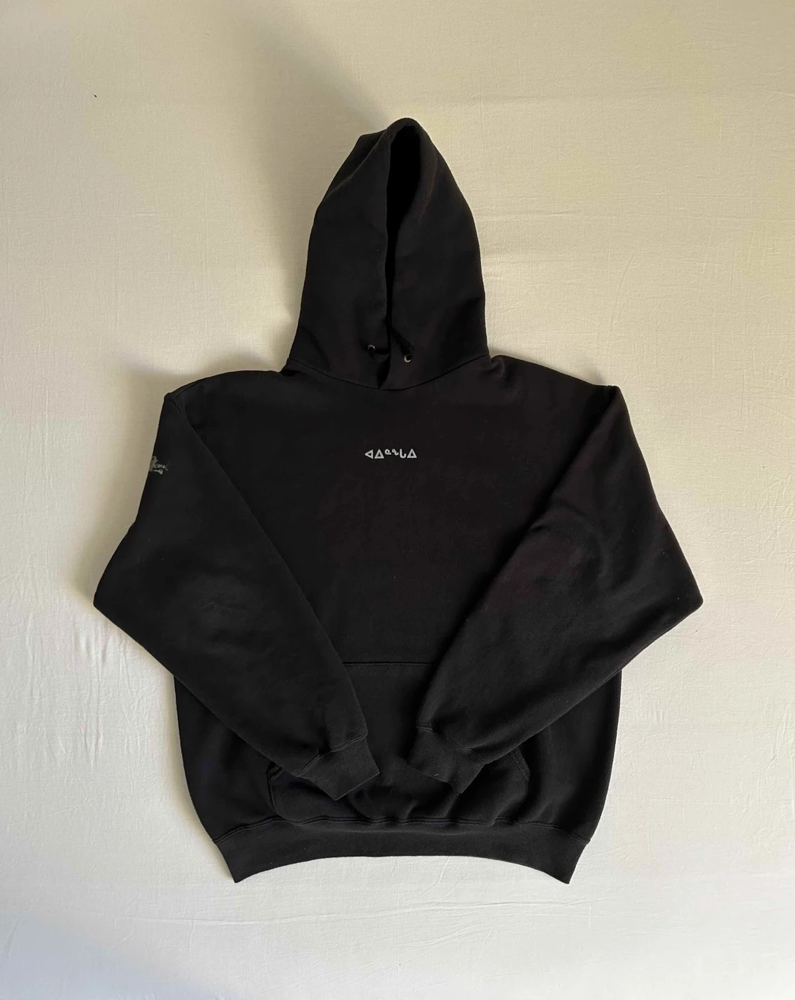

olvehyh
« Inuit Exploration »
A research project which stemmed from the topic of 'exploitative productivity'.
‘ᑐᙵᓱ’ (meaning 'welcome' in Inuktitut) is a two-part soundscape which explores starks differences between traditional and mainsteam clothing through a sonic medium, in an attempt to highlight how our modern economy exploits and neglects that art of fashion in the name of productivity. Soundscape ‘ᑐᙵᓱ’ was performed on Mushroom Radio on the 17th of May at the Royal Academy of Art in The Hague.
Accompanying posters and custom apparrel depict a visual exploration into the style and ancient technique behind the making and wearing of native Inuit garments. (1) Untitled, A2 Laserprint. (2) ᑕᑯᓇᓵᕐᓇᑯᓂ (Long time no see), A2 Laserprint and Silkscreened Hoodie.
‘ᑐᙵᓱ’ (meaning 'welcome' in Inuktitut) is a two-part soundscape which explores starks differences between traditional and mainsteam clothing through a sonic medium, in an attempt to highlight how our modern economy exploits and neglects that art of fashion in the name of productivity. Soundscape ‘ᑐᙵᓱ’ was performed on Mushroom Radio on the 17th of May at the Royal Academy of Art in The Hague.
Accompanying posters and custom apparrel depict a visual exploration into the style and ancient technique behind the making and wearing of native Inuit garments. (1) Untitled, A2 Laserprint. (2) ᑕᑯᓇᓵᕐᓇᑯᓂ (Long time no see), A2 Laserprint and Silkscreened Hoodie.
Soundscape | Journal Publication | Poster | Apparrel
Sound Design · Graphic Design · Print · Silkscreening
Duration: 8:33min
95 pages | 135 × 190 mm | English
Den Haag, 2024
Typeface: Droid Serif, Pigiarniq
Paper: Bio Top 80g
Printer: KABK Print Workshop
Sound Design · Graphic Design · Print · Silkscreening
Duration: 8:33min
95 pages | 135 × 190 mm | English
Den Haag, 2024
Typeface: Droid Serif, Pigiarniq
Paper: Bio Top 80g
Printer: KABK Print Workshop


